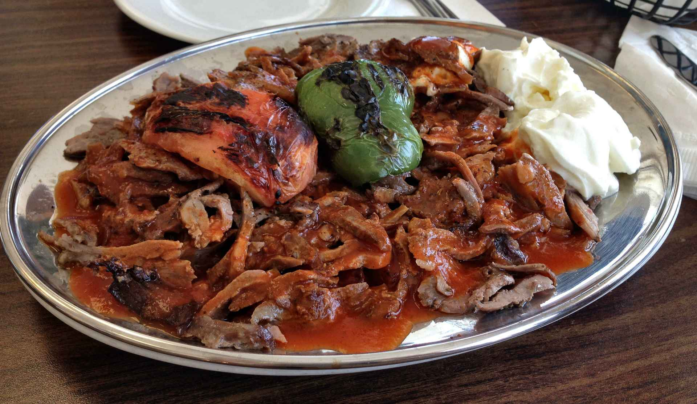
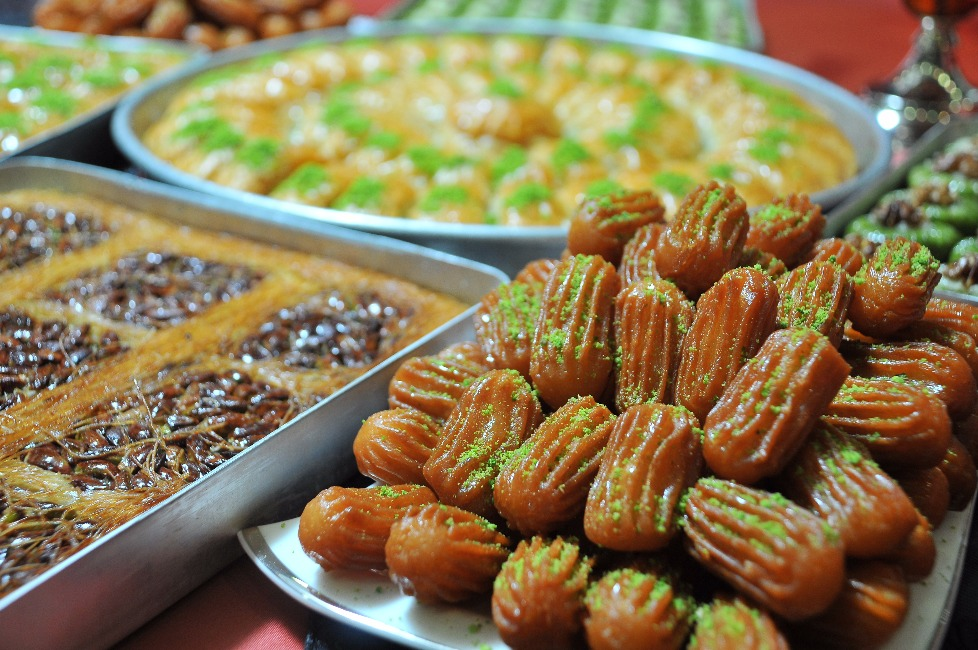

Турецкая кухня-наследие османов!
Турецкая кухня развивалась на протяжении столетий и берёт свои истоки в кулинарных традициях кочевых тюркских племён, на которые в свою очередь оказали наибольшее влияние греческая (и вся средиземноморская), балканская, арабская, кавказская кухни, а также пищевые запреты ислама. Как и во всём исламском мире, в Турции действуют особые предписания для пищи и её приготовления — харам (запрещённое) и халяль (разрешённое). Особым способом, согласно мусульманскому ритуалу, забивают животных.
Мучные изделия!
Турецкая кухня предлагает большое количество разного вида хлебов, пирогов и печений. Подавать хлеб на стол является традицией. Вот некоторые из его видов:
- Экмек — белый хлеб. Серые (из проса) и чёрные сорта хлеба (сомун) выпекаются в сельской местности согласно домашним рецептам и продаются преимущественно на рынках и ярмарках.
- Симит — бублики, посыпанные кунжутом. Продаются в Турции повсюду, в том числе и уличными торговцами.
- Лахмаджун — турецкая пицца. Представляет собой тонкую лепёшку с мясным фаршем, мелко нарезанными овощами и пряностями. Бывает на вкус «обычная» и острая.
- Гёзлеме — лепёшка. Представляет собой тонко раскатанное тесто (юфка). В качестве начинки используется смесь сыра со шпинатом или начинку по выбору (фарш, сыр, творог и т. д)
- Берек — небольшие запеченные турецкие рогалики. Их готовят из лаваша, который нарезают треугольниками. В начинку идёт сыр, зелень и специи

Кебабы
Кебабом, как правило, называется поджаренное мясо, из которого турецкие повара готовят множество блюд.
- Дёнер-кебаб — наиболее известное блюдо-кебаб во всей Европе. Метод приготовления: с установленного вертикально и медленно вращающегося вертела с нанизанным на него жареным мясом длинным острым ножом срезаются тонкие кусочки. Первоначально это было обычное столовое блюдо с гарниром из риса и салата. Со временем в Турции и в Европе дёнер-кебаб развился в «закуску на ходу» — кебаб укладывается в разрезанную пополам лепёшку. Внутрь к мясу добавляют овощи и соусы на вкус — острый (чили) или пряный (дзадзики).
- Искендер кебаб — тонко нарезанная ягнятина приготовляется в томатном соусе с мелко нарезанными кусочками лепёшки, топлёным маслом и йогуртом.
- Шиш-кебаб — традиционно мясо, жареное на вертеле (ягнятина) с помидорами и сладким перцем (турецкий шашлык).
- Кёфте — турецкие тефтели. Приготовление в каждом регионе страны по особому рецепту.
- Адана-кебаб — мясной фарш, очень остро поперченный и обжаренный на вертеле.

Мезе
В Турции, как и во всём Средиземноморье, традицией является сервировка закусок, как правило в сопровождении напитков («для аппетита») и называемых мезе. Различают мезе холодные и горячие. К холодным относятся различные кремы, приготовленные преимущественно на основе йогуртов. Наиболее распространённые:
- Хайдари — крем из сюзме йогурта (10 % жирности) с добавлением мяты, брынзы, сахара, незначительного количества лимонного сока и оливкового масла.
- Хавуч эзмеси — крем из сюзме йогурта и мелко натёртой моркови, лимонного сока, соли, перца и оливкового масла.
- Антеп эзмеси — очень острая овощная закуска из мелко нарезанных красных пеперони и зелёного перца, лука, томатной пасты и пасты из острого красного перца, лимонного сока, соли, листьев петрушки. Добавляется также немного мяты и оливкового масла. Традиционно приготовляется в восточной Турции.
- Джяджик — сюзме йогурт (освобождённый от сыворотки йогурт) с мелко нарезанными огурцами, солью, перцем, заправленный лимонным соком и оливковым маслом. Добавляются по вкусу чеснок и мята.
- Каридеш гювеч — креветки, запечённые с помидорами, чесноком, пряностями и сливочным маслом в глиняной посуде
Сладости
В Турции традиционно огромный выбор сладких и кондитерских блюд и угощений, например:
- Пахлава — вымоченные в сиропе сладости, приготовленные из теста с фисташками или орехами
- Тулумба — сладость из теста цилиндрической формы с ажурными рёбрами пропитанного сахарным сиропом
- Пишмание — клубки из тонких нитей, состоящих из обжаренных в масле муки и сахара, иногда с добавлением фисташковых орехов, кунжута, ванили или других вкусовых добавок.
- Локум — кубики из сахара или мёда с добавлением крахмала, сушёными фруктами, орехами, фисташками, кокосами, со вкусом розы или фруктов.
- Гюллячь — десертное блюдо из рисового теста фило, пропитанного молоком и сдобренного между слоями перемолотыми грецкими орехами, сверху украшается семенами граната (из-за хорошей усваиваемости организмом особенно часто готовится в месяц поста Рамадан).
- Джезерье — десертное кушанье на основе уваренного и желированного морковного сиропа, гранатового сока или иного фруктового желе с включением фисташек.
- Турецкая халва (Хельва) — изготовляется из кунжутной пасты и сахара, иногда с добавлением какао. (также является национальным блюдом турецкого народа)
Перейтик рецептам